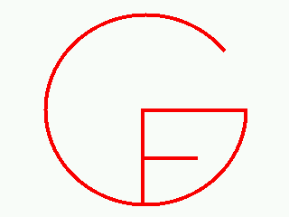

Version 3.0
24 June 2009
[ Demos
| Download
| Libraries
| Reference
| Tutorial
]
[ Demos
| Download
| Developers
| Libraries
| People
| Publications
| QuickRefCard
| Reference
| Tutorial
]
24 June 2009: GF version 3.0 released. No longer beta!
4 June 2009: GF sources (from the darcs repository) can now be compiled with GHC 6.10.3, but no longer with GHC 6.8.
29 April 2009: GF online course available as videos: see "News" under the GF Summer School Web Page.
20 April 2009: On-line course "GF for Resource Grammar Writers" starting today at 15.30. See the Summer School Google Group for instructions how to start.
3 April 2009: Two demos and one talk on GF at EACL in Athens.
20 February 2009: GF Resource Grammar Summer School in Gothenburg, 17-28 August 2009.
4 November 2008: GHC 6.10 released, but it doesn't work with GF sources yet. If compiling GF from source, use e.g. GHC 6.8.3.
15 August 2008: Numeral translator for the iPhone
27 June 2008: release of GF 3.0 and this new web page; the old web page is here.
GF, Grammatical Framework, is a programming language for multilingual grammar applications. It is
Don't worry if you don't know most of the references above - but if you do know at least one, it may help you to get a first idea of what GF is.
GF can be used for building
GF is open-source, licensed under GPL (the program) and LGPL (the libraries). It is available for
GF was first created in 1998 at Xerox Research Centre Europe, Grenoble, in the project Multilingual Document Authoring. At Xerox, it was used for prototypes including a restaurant phrase book, a database query system, a formalization of an alarm system instructions with translations to 5 languages, and an authoring system for medical drug descriptions.
Later projects using GF and involving third parties include, in chronological order,
Academically, GF has been used in four PhD theses and resulted in around fifty scientific publications (see GF publication list).
GF is easy to learn by following the tutorial. You can write your first translator in 15 minutes.
GF has an interactive command interpreter, as well as a batch compiler. Grammars can be compiled to parser and translator code in many different formats. These components can then be embedded in applications written in other programming languages. The formats currently supported are:
The GF programming language is high-level and advanced, featuring
Libraries are at the heart of modern software engineering. In natural language applications, libraries are a way to cope with thousands of details involved in syntax, lexicon, and inflection. The GF resource grammar library has support for an increasing number of languages, currently including
Adding a language to the resource library takes 3 to 9 months - contributions are welcome!